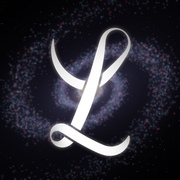

Ouverture de la dernière version…
Touche l'écran pour choisir une autre version

Ouverture de la dernière version…
Touche l'écran pour choisir une autre version
Chaque point est une version publiée, avec sa date et son heure. En orange : les branches pas encore fusionnées, à essayer. Une version passée s'ouvre avec ses propres verbes d'origine, sur ta base du jour.